FUNCTIONAL SPECIFICATION DOCUMENT
BCA SYARIAH (BCAS)
MODUL SAKU VALAS
FITUR PENGEMBANGAN SAKU VALAS
Dipersiapkan oleh
PT Ihsan Solusi Informatika
Jl. PHH Mustofa No. 39
Ruko Surapati Core C-7 Bandung
| Nomor Dokumen |
Halaman |
| FSD-BCAS-VALAS-01 |
1 / N |
| Versi |
1.0.0 |
Author
| Nama |
Role |
| {Nama Writer} |
Technical Writer |
| {Nama Reviewer} |
Reviewer |
Detail Daftar Perubahan
| Versi |
Tanggal Perubahan |
Penulis |
Deskripsi |
| 1.0.0 |
{DD/MM/YYYY} |
{Nama Penulis} |
Initial release dokumen FSD Saku Valas |
Daftar Isi
- Gambaran Umum
- 1.1. Latar Belakang
- 1.2. Tujuan
- 1.3. Ruang Lingkup
- 1.4. Definisi
- 1.5. Objektif
- 1.6. Pengguna
- Arsitektur Sistem
- 2.1. Arsitektur Sistem
- 2.2. Spesifikasi Integrasi REST API
- Manajemen Kurs
- 3.1. Penambahan Valuta Baru
- 3.2. Perubahan Nilai Kurs
- Laporan Valas
- 4.1. Laporan Trial Balance Valas
- 4.2. Laporan Buku Besar Valas
- 4.3. Laporan Neraca Valas
- LBV (Ledger Balance Verification)
- 5.1. Laporan LBV
- EOM Hitung GDR
- 6.1. Simulasi GDR
- 6.2. Eksekusi EOM
- Pengaturan Umum
- Persetujuan Dokumen
- Lampiran
- Lampiran A. Screenshot Manajemen Kurs
- Lampiran B. Screenshot Laporan Valas
- Lampiran C. Screenshot LBV
- Lampiran D. Screenshot Simulasi GDR & Eksekusi EOM
1. Gambaran Umum
1.1. Latar Belakang
Dalam rangka mendukung pertumbuhan layanan perbankan syariah berbasis valuta asing, BCA Syariah (BCAS) menggunakan Tought Machine (TM) sebagai sistem utama yang menjalankan fitur Saku Valas. Pengembangan ini mencakup penguatan integrasi antara TM dengan sistem Core Banking BCAS (CBS), sehingga data jurnal valas serta saldo harian dan saldo rata-rata valas yang dihasilkan TM dapat diterima, diolah, dan dilaporkan secara akurat di sisi Core Banking. Cakupan pengembangan meliputi pengelolaan kurs valuta asing, penyediaan laporan valas yang komprehensif, verifikasi saldo buku besar (LBV), serta proses End of Month (EOM) untuk penghitungan Gross Distribution Rate (GDR). Pengembangan ini bertujuan untuk meningkatkan efisiensi operasional, akurasi data valas, serta kepatuhan terhadap regulasi pelaporan keuangan yang berlaku.
1.2. Tujuan
Berikut ini adalah tujuan pengembangan fitur Saku Valas pada sistem BCAS:
- Menyediakan fungsi manajemen kurs yang memungkinkan penambahan valuta baru dan pembaruan nilai kurs secara real-time di Core Banking.
- Menghasilkan laporan valas yang akurat di Core Banking, meliputi Trial Balance, Buku Besar, dan Neraca Valas, berdasarkan data yang diterima dari TM.
- Meningkatkan integrasi penerimaan saldo harian valas dari TM ke Core Banking melalui mekanisme LBV.
- Mengotomatisasi proses EOM di Core Banking untuk penghitungan GDR berdasarkan saldo valas dan saldo rata-rata yang dikirim oleh TM.
1.3. Ruang Lingkup
Ruang lingkup pengembangan fitur Saku Valas pada sistem BCAS adalah sebagai berikut:
- Manajemen Kurs: Penambahan valuta baru dan perubahan nilai kurs per valuta di Core Banking.
- Laporan Valas: Laporan Trial Balance Valas, Laporan Buku Besar Valas, dan Laporan Neraca Valas di Core Banking berdasarkan data jurnal valas yang diterima dari TM.
- LBV (Ledger Balance Verification): Enhance penerimaan dan verifikasi saldo harian valas yang dikirim TM ke Core Banking.
- EOM Hitung GDR: Enhance penerimaan saldo rata-rata valas dari TM dan enhance script EOM di Core Banking untuk penghitungan GDR dari data yang dikirim TM.
1.4. Definisi
Berikut adalah definisi dari beberapa istilah yang ada pada proses Saku Valas:
- Valas (Valuta Asing): Mata uang asing selain Rupiah yang digunakan dalam transaksi perbankan internasional.
- Kurs: Nilai tukar suatu mata uang terhadap mata uang lainnya (umumnya terhadap IDR).
- GDR (Gross Distribution Rate): Nilai rata-rata kotor harian yang dihitung dari saldo valas selama periode tertentu.
- TM (Tought Machine): Sistem utama (core banking) tempat fitur Saku Valas berjalan. TM mengirimkan jurnal valas, saldo harian, dan saldo rata-rata valas ke Core Banking BCAS melalui REST API.
- LBV (Ledger Balance Verification): Proses verifikasi antara saldo valas yang diterima Core Banking dari TM dengan saldo yang tercatat di Core DB BCAS.
- EOM (End of Month): Proses penutupan akhir bulan yang mencakup rekalkulasi saldo, GDR, dan rekonsiliasi valas.
- Trial Balance Valas: Laporan yang menampilkan saldo debet dan kredit dari seluruh akun valas pada periode tertentu.
- Buku Besar Valas: Catatan lengkap seluruh transaksi valas yang dikelompokkan per akun.
- Neraca Valas: Laporan posisi keuangan yang menyajikan aset, liabilitas, dan ekuitas dalam denominasi valas.
- CIF: Customer Information File — nomor identifikasi unik nasabah di sistem core banking.
1.5. Objektif
- Dokumen ini disusun agar setiap pengguna dan pihak yang terlibat dalam proyek dapat memahami secara menyeluruh detail terkait fitur Saku Valas.
- Seluruh ilustrasi/gambar pada dokumen ini digunakan semata-mata sebagai alat bantu untuk memudahkan pemahaman terhadap deskripsi field maupun alur proses/event.
- Aplikasi ini ditujukan untuk mendukung operasional cabang dan treasury, digunakan oleh petugas bank dalam melakukan transaksi dan aktivitas terkait, dengan pendekatan yang sederhana, efektif, dan mendukung implementasi cepat (quick win).
- Dokumen ini merupakan dokumen fungsional yang dihasilkan dari proses pengumpulan kebutuhan bisnis (business requirement gathering) antara tim vendor (ISI) dan tim BCAS.
- Dokumen ini akan terus diperbarui sesuai kebutuhan, dan setiap perubahan harus disetujui oleh setiap pihak (vendor dan BCAS) melalui tanda tangan perwakilan resmi dari masing-masing pihak.
1.6. Pengguna
Berikut adalah pengguna fitur Saku Valas:
| No |
Role |
Deskripsi |
| 1 |
Accounting Officer |
Petugas accounting yang bertanggung jawab atas pengelolaan kurs valas, termasuk penambahan valuta baru dan pembaruan nilai kurs. Dapat mengakses menu Manajemen Kurs. |
| 2 |
Accounting Supervisor |
Supervisor accounting yang melakukan approval atas perubahan kurs dan penambahan valuta baru. Dapat mengakses seluruh menu Manajemen Kurs termasuk fungsi approval. |
| 3 |
Treasury Officer |
Petugas treasury yang bertanggung jawab atas proses EOM dan simulasi GDR valas. Dapat mengakses menu Simulasi GDR dan Eksekusi EOM. |
| 4 |
Treasury Supervisor |
Supervisor treasury yang melakukan approval atas hasil hitung GDR. Dapat mengakses menu EOM Hitung GDR termasuk fungsi approval. |
| 3 |
Finance & Accounting Staff |
Staf keuangan yang bertanggung jawab menghasilkan dan memverifikasi laporan valas (Trial Balance, Buku Besar, Neraca). Dapat mengakses menu Laporan Valas dan LBV. |
| 4 |
System Administrator |
Administrator sistem yang mengelola konfigurasi integrasi antara core banking dan sistem TM. Dapat mengakses seluruh menu termasuk pengaturan integrasi. |
2. Arsitektur Sistem
2.1. Arsitektur Sistem
Berikut ini adalah arsitektur sistem dari fitur Saku Valas BCAS:
graph TB
TM(["TM / Tought Machine\n(Sistem Utama Saku Valas)"])
subgraph CORE["Aplikasi Core Banking BCAS (CBS)"]
subgraph FUNDING["Modul Core"]
MK["Manajemen Kurs"]
LLBV["Laporan LBV"]
LTB["Laporan Trial Balance"]
LN["Laporan Neraca"]
BB["Buku Besar"]
SGDR["Simulasi GDR"]
EOM["Eksekusi EOM"]
end
RREPORT{{"REST Report\n(Saldo Harian & Saldo Rata-rata)"}}
RGL{{"REST GL\n(Jurnal Valas)"}}
DB[("Core DB")]
end
TM -->|"Saldo Harian &\nSaldo Rata-rata"| RREPORT
TM -->|"Jurnal Valas"| RGL
RREPORT --> DB
RGL --> DB
MK & LLBV & LTB & LN & BB & SGDR & EOM --- DB
Keterangan:
Fitur Saku Valas utamanya berjalan di Tought Machine (TM). Modul Core pada Aplikasi Core Banking BCAS (CBS) berperan sebagai sistem penerima yang mengolah data yang dikirim oleh TM melalui dua endpoint REST API. Modul ini terdiri dari tujuh menu: Manajemen Kurs, Laporan LBV, Laporan Trial Balance, Laporan Neraca, Buku Besar, Simulasi GDR, dan Eksekusi EOM. Seluruh menu membaca dan menyimpan data ke Core DB.
Integrasi dari TM ke Core Banking dilakukan melalui dua endpoint REST API:
- REST Report — TM mengirimkan saldo harian valas (setiap akhir hari kerja) dan saldo rata-rata valas (setiap akhir bulan) ke Core Banking, digunakan untuk LBV dan perhitungan GDR.
- REST GL — TM mengirimkan jurnal valas (setiap ada jurnal yang dikonfirmasi) ke Core Banking, digunakan untuk pencatatan Buku Besar, Trial Balance, dan Neraca Valas.
2.2. Spesifikasi Integrasi REST API
2.2.1. REST Report
| Atribut |
Keterangan |
| Nama Endpoint |
REST Report |
| Arah Data |
TM → Core Banking |
| Data yang Diterima |
Saldo harian valas, Saldo rata-rata valas |
| Trigger |
Dikirim oleh TM setiap akhir hari kerja (saldo harian) dan akhir bulan (saldo rata-rata) |
| Format |
JSON |
| Digunakan Oleh |
Laporan LBV, Simulasi GDR, Eksekusi EOM |
2.2.2. REST GL
| Atribut |
Keterangan |
| Nama Endpoint |
REST GL |
| Arah Data |
TM → Core Banking |
| Data yang Diterima |
Jurnal valas (entri debet/kredit per akun valas) |
| Trigger |
Dikirim oleh TM setiap ada jurnal valas yang dikonfirmasi |
| Format |
JSON |
| Digunakan Oleh |
Buku Besar, Laporan Trial Balance, Laporan Neraca |
3. Manajemen Kurs
3.1. Penambahan Valuta Baru
3.1.1. Alur Proses
Alur proses penambahan valuta baru pada fitur Manajemen Kurs.
flowchart TD
A["[Accounting Officer] Akses Menu Manajemen Kurs"] --> B["Pilih 'Tambah Valuta'"]
B --> C["Input Data Valuta Baru"]
C --> D{"Validasi Input (Sistem)"}
D -->|Valid| E["Submit untuk Approval"]
E --> F["[Accounting Supervisor] Review & Approve"]
F --> G["Sistem Simpan Data Valuta"]
G --> H["Konfirmasi Berhasil"]
3.1.2. Keterangan Alur Proses
| Deskripsi |
: |
Proses penambahan data valuta baru ke dalam sistem Saku Valas |
| User |
: |
Accounting Officer (input), Accounting Supervisor (approval) |
| Pre kondisi |
: |
1. User telah login ke sistem BCAS. 2. User memiliki role Accounting Officer. 3. Valuta yang akan ditambahkan belum terdaftar di sistem. |
| Alur |
: |
1. Accounting Officer mengakses menu Manajemen Kurs. 2. Accounting Officer memilih tombol "Tambah Valuta". 3. Sistem menampilkan form input data valuta baru. 4. Accounting Officer mengisi seluruh field yang tersedia (kode valuta, nama valuta, nilai kurs beli, nilai kurs jual). 5. Sistem melakukan validasi input secara real-time. 6. Accounting Officer menekan tombol "Submit". 7. Sistem mengirimkan notifikasi kepada Accounting Supervisor untuk approval. 8. Accounting Supervisor menyetujui atau menolak penambahan valuta. 9. Jika disetujui, sistem menyimpan data valuta baru dan menampilkan konfirmasi. |
| Error Handling |
: |
Sistem menampilkan pesan error sesuai dengan Tabel Validasi Manajemen Kurs |
| Post kondisi |
: |
Valuta baru berhasil tersimpan di database dan dapat digunakan dalam transaksi valas. |
3.1.3. Use Case
| Given |
: |
User sudah berada pada halaman Manajemen Kurs |
| When |
: |
User menekan tombol "Tambah Valuta" dan mengisi form data valuta baru, kemudian menekan tombol "Submit". |
| Then |
: |
Sistem memvalidasi seluruh input. Jika semua field valid, sistem mengirimkan data ke antrian approval. Jika ada field yang tidak valid, sistem menampilkan pesan error yang relevan dan tidak melanjutkan proses. Setelah approval dari Supervisor, data valuta baru tersimpan dan muncul pada daftar valuta aktif. |
3.1.4. Mockup Penambahan Valuta Baru
Lihat screenshot terkait pada Lampiran — Screenshot Manajemen Kurs.
Berikut adalah tabel field description pada form Tambah / Ubah Data Valuta:
| Nama Field |
Deskripsi |
Data Type |
Length |
Mandatory (M/O/C) |
Sumber Data |
| Kode Valuta |
Kode ISO 4217 mata uang (contoh: USD, AUD, EUR) |
VARCHAR |
3 |
M |
Manual Input (read-only saat ubah) |
| Valuta Default |
Menandai apakah valuta ini adalah valuta default sistem |
BOOLEAN |
- |
M |
Dropdown (True / False) |
| Nama Singkat |
Nama singkat valuta (contoh: AUD, USD) |
VARCHAR |
10 |
M |
Manual Input |
| Nama Lengkap |
Nama lengkap valuta (contoh: AUSTRALIAN DOLLAR) |
VARCHAR |
100 |
M |
Manual Input |
| Keterangan |
Keterangan tambahan terkait valuta |
VARCHAR |
200 |
O |
Manual Input |
Keterangan pilihan pada field dropdown:
| Field |
Option Dropdown |
| Valuta Default |
True, False |
3.1.6. Action — Penambahan Valuta Baru
| Action |
Output |
Keterangan |
| Simpan |
Data valuta tersimpan ke database dan muncul pada Daftar Valuta |
- |
| Batal |
Form ditutup tanpa menyimpan perubahan |
- |
3.1.7. Tabel Validasi — Penambahan Valuta Baru
| Case |
Result |
| Kode valuta sudah terdaftar di sistem |
"Kode valuta [XXX] sudah terdaftar. Silakan gunakan kode yang berbeda." |
| Kode valuta tidak sesuai format ISO 4217 (bukan 3 karakter alfabetik) |
"Kode valuta harus terdiri dari 3 karakter huruf (ISO 4217)." |
| Field mandatory tidak diisi |
"Field [nama field] wajib diisi." |
3.2. Perubahan Nilai Kurs
3.2.1. Alur Proses
Alur proses perubahan nilai kurs untuk valuta yang sudah terdaftar.
flowchart TD
A["[Accounting Officer] Akses Menu Manajemen Kurs"] --> B["Pilih Valuta dari Daftar"]
B --> C["Klik 'Buat Perubahan Kurs Baru'"]
C --> D["Sistem menampilkan Kurs Lama sebagai referensi"]
D --> E["Input Nilai Kurs Baru\n(kurs tengah, beli banknote, jual banknote,\nbeli transfer, jual transfer)"]
E --> F{"Validasi Input (Sistem)"}
F -->|Valid| G["Klik Simpan — Submit untuk Approval"]
G --> H["[Accounting Supervisor] Review & Approve"]
H --> I["Sistem update nilai kurs & simpan histori perubahan"]
F -->|Tidak Valid| E
3.2.2. Keterangan Alur Proses
| Deskripsi |
: |
Proses pembaruan nilai kurs untuk valuta yang sudah terdaftar dalam sistem |
| User |
: |
Accounting Officer (input), Accounting Supervisor (approval) |
| Pre kondisi |
: |
1. User telah login ke sistem BCAS. 2. User memiliki role Accounting Officer. 3. Valuta yang akan diubah kursnya sudah terdaftar dan berstatus Aktif. |
| Alur |
: |
1. Accounting Officer mengakses menu Manajemen Kurs. 2. Sistem menampilkan daftar valuta aktif. 3. Accounting Officer memilih valuta yang akan diubah kursnya. 4. Accounting Officer menekan tombol "Ubah Kurs". 5. Sistem menampilkan form perubahan kurs dengan nilai kurs terkini sebagai referensi. 6. Accounting Officer mengisi nilai kurs baru. 7. Sistem melakukan validasi input. 8. Accounting Officer menekan "Submit". 9. Accounting Supervisor melakukan review dan approval. 10. Sistem memperbarui nilai kurs dan menyimpan histori perubahan. |
| Error Handling |
: |
Sistem menampilkan pesan error sesuai dengan Tabel Validasi Perubahan Kurs |
| Post kondisi |
: |
Nilai kurs valuta berhasil diperbarui. Histori perubahan kurs tersimpan dan dapat diaudit. |
3.2.3. Use Case
| Given |
: |
User sudah berada pada halaman Manajemen Kurs dan memilih salah satu valuta aktif |
| When |
: |
User menekan tombol "Ubah Kurs", mengisi nilai kurs baru, dan menekan tombol "Submit" |
| Then |
: |
Sistem memvalidasi nilai kurs baru. Jika valid, sistem mengirim request approval ke Supervisor. Setelah disetujui, nilai kurs pada sistem diperbarui sesuai tanggal efektif yang ditentukan, dan data kurs lama tersimpan sebagai histori. |
3.2.4. Mockup Perubahan Nilai Kurs
{Lampirkan UI mockup form perubahan nilai kurs}
Keterangan: Halaman ini menampilkan daftar valuta aktif dan form untuk memperbarui nilai kurs beli, jual, dan tengah.
Berikut adalah tabel field description pada halaman Ubah Nilai Kurs:
| Nama Field |
Deskripsi |
Data Type |
Length |
Mandatory (M/O/C) |
Sumber Data |
| Kode Valuta |
Kode ISO valuta yang akan diubah kursnya (read-only) |
VARCHAR |
3 |
M |
Core (auto-fill) |
| Nama Valuta |
Nama lengkap valuta (read-only) |
VARCHAR |
50 |
- |
Core (auto-fill) |
| Kurs Beli Lama |
Nilai kurs beli yang sedang berlaku (read-only, untuk referensi) |
DECIMAL(18,4) |
- |
- |
Core |
| Kurs Jual Lama |
Nilai kurs jual yang sedang berlaku (read-only, untuk referensi) |
DECIMAL(18,4) |
- |
- |
Core |
| Kurs Beli Baru |
Nilai kurs beli yang baru |
DECIMAL(18,4) |
- |
M |
Manual Input |
| Kurs Jual Baru |
Nilai kurs jual yang baru |
DECIMAL(18,4) |
- |
M |
Manual Input |
| Kurs Tengah Baru |
Nilai kurs tengah baru, dihitung otomatis |
DECIMAL(18,4) |
- |
- |
Auto-calculate |
3.2.6. Action — Perubahan Nilai Kurs
| Action |
Output |
Keterangan |
| Submit |
Sistem mengirimkan data perubahan kurs ke antrian approval Supervisor |
Tombol aktif setelah seluruh field mandatory terisi dan valid |
| Batal |
Sistem kembali ke halaman daftar valuta tanpa menyimpan perubahan |
Membatalkan proses perubahan kurs |
| Approve (Supervisor) |
Nilai kurs diperbarui; histori kurs lama tersimpan di log |
Hanya dapat dilakukan oleh user dengan role Accounting Supervisor |
| Reject (Supervisor) |
Nilai kurs tidak berubah; notifikasi dikirim ke Accounting Officer |
Supervisor wajib mengisi alasan penolakan |
3.2.7. Tabel Validasi — Perubahan Nilai Kurs
| Case |
Result |
| Kurs Beli Baru atau Kurs Jual Baru bernilai 0 atau negatif |
"Nilai kurs harus lebih besar dari 0." |
| Kurs Beli Baru lebih besar dari Kurs Jual Baru |
"Kurs Beli tidak boleh lebih besar dari Kurs Jual." |
| Nilai kurs baru sama dengan nilai kurs yang sedang berlaku |
"Nilai kurs baru tidak boleh sama dengan nilai kurs yang sedang berlaku." |
| Field mandatory tidak diisi |
"Field [nama field] wajib diisi." |
| Valuta berstatus Nonaktif |
"Kurs valuta nonaktif tidak dapat diubah." |
4. Laporan Valas
4.1. Laporan Trial Balance Jurnal
4.1.1. Alur Proses
flowchart TD
A["[Finance Staff] Akses Menu Laporan > Trial Balance"] --> B["Sistem menampilkan form parameter\n'Laporan Trial Balance Jurnal'"]
B --> C["Input Parameter\n(Mulai Tanggal, Hingga Tanggal, Valuta, Cabang)"]
C --> D["Klik OK — Sistem generate laporan"]
D --> E["Tampilkan Laporan di Layar"]
E --> F["Opsi: Export Excel"]
4.1.2. Keterangan Alur Proses
| Deskripsi |
: |
Proses pembuatan laporan Trial Balance Jurnal yang menampilkan saldo, mutasi debet/kredit, saldo akhir, dan ekuivalen IDR per akun valas pada periode tertentu |
| User |
: |
Finance & Accounting Staff |
| Pre kondisi |
: |
1. User telah login ke sistem BCAS. 2. User memiliki role Finance & Accounting Staff. 3. Data transaksi valas pada periode yang diminta tersedia di sistem. |
| Alur |
: |
1. User mengakses menu Laporan > Trial Balance. 2. Sistem menampilkan form parameter "Laporan Trial Balance Jurnal". 3. User mengisi Mulai Tanggal dan Hingga Tanggal. 4. User memilih Valuta (spesifik atau centang "Seluruh Valuta") dan Cabang (spesifik atau centang "Seluruh Cabang"). 5. User menekan tombol "OK". 6. Sistem mengambil data dari database dan menampilkan laporan. 7. User dapat melakukan export ke format Excel. |
| Error Handling |
: |
Sistem menampilkan pesan error sesuai Tabel Validasi Laporan Valas |
| Post kondisi |
: |
Laporan Trial Balance Jurnal berhasil ditampilkan dan/atau dieksport. |
4.1.3. Field Description — Parameter & Output Trial Balance Jurnal
Berikut adalah tabel field description untuk parameter input laporan Trial Balance Jurnal:
| Nama Field |
Deskripsi |
Data Type |
Length |
Mandatory (M/O/C) |
Sumber Data |
| Mulai Tanggal |
Tanggal awal periode laporan |
DATE |
- |
M |
Manual Input / Date Picker |
| Hingga Tanggal |
Tanggal akhir periode laporan |
DATE |
- |
M |
Manual Input / Date Picker |
| Valuta |
Filter berdasarkan kode valuta; centang "Seluruh Valuta" untuk semua valuta |
VARCHAR |
3 |
O |
Manual Input / Checkbox |
| Cabang |
Filter berdasarkan cabang; centang "Seluruh Cabang" untuk semua cabang |
VARCHAR |
10 |
O |
Manual Input / Checkbox |
Berikut adalah kolom output yang ditampilkan pada laporan Trial Balance Jurnal:
| Nama Field |
Deskripsi |
Sumber Data |
| Kode Akun |
Kode akun buku besar |
Core |
| Nama Akun |
Nama akun buku besar |
Core |
| Kode Cabang |
Kode cabang |
Core |
| Kode Valuta |
Kode mata uang (contoh: USD, EUR, SGD) |
Core |
| RC Code |
Kode rekening/kategori akun |
Core |
| Saldo |
Saldo awal pada tanggal mulai periode |
Core |
| Debet |
Total mutasi debet selama periode |
Core |
| Kredit |
Total mutasi kredit selama periode |
Core |
| Saldo Akhir |
Saldo akhir pada tanggal akhir periode |
Calculated |
| Kurs Realisasi |
Kurs realisasi yang digunakan pada tanggal akhir |
Core |
| Saldo Ekuivalen IDR |
Nilai saldo akhir yang dikonversi ke IDR |
Calculated |
4.1.4. Action — Trial Balance Jurnal
| Action |
Output |
Keterangan |
| OK |
Sistem mengambil data dan menampilkan laporan sesuai parameter |
Memerlukan minimal Mulai Tanggal dan Hingga Tanggal |
| Export Excel |
File Excel (.xlsx) laporan Trial Balance Jurnal terunduh |
Memuat seluruh data tanpa paginasi |
| Batal |
Form ditutup tanpa generate laporan |
- |
4.1.5. Tabel Validasi — Trial Balance Jurnal
| Case |
Result |
| Mulai Tanggal lebih besar dari Hingga Tanggal |
"Tanggal awal periode tidak boleh lebih besar dari tanggal akhir periode." |
| Data transaksi valas pada periode yang diminta tidak tersedia |
"Tidak ada data yang ditemukan untuk parameter yang dipilih." |
4.2. Laporan Buku Besar Valas
4.2.1. Alur Proses
flowchart TD
A["[Finance Staff] Akses Menu Laporan > Buku Besar"] --> B["Sistem menampilkan form Filter Data"]
B --> C["Input Parameter\n(Valuta*, Cabang*, Kode GL*, Kode RCC, Mulai Tanggal*)"]
C --> D["Klik Tampilkan — Sistem load data transaksi"]
D --> E["Tampilkan Saldo Awal, Saldo Akhir, dan Daftar Transaksi"]
E --> F["Opsi: Export List Transaksi (XLS)"]
4.2.2. Keterangan Alur Proses
| Deskripsi |
: |
Proses pembuatan laporan Buku Besar Valas yang menampilkan detail seluruh transaksi valas per akun GL dalam suatu periode, beserta saldo awal dan saldo akhir dalam valuta asli dan ekuivalen IDR |
| User |
: |
Finance & Accounting Staff |
| Pre kondisi |
: |
1. User telah login ke sistem BCAS. 2. Data transaksi valas pada periode yang diminta tersedia. |
| Alur |
: |
1. User mengakses menu Laporan > Buku Besar. 2. Sistem menampilkan form Filter Data. 3. User mengisi Valuta, Cabang, Kode GL (wajib), serta Kode RCC (opsional) dan periode. 4. User menekan tombol "Tampilkan". 5. Sistem menampilkan saldo awal, saldo akhir, saldo awal ekuivalen, dan saldo akhir ekuivalen IDR di bagian atas, serta daftar transaksi di bawahnya. 6. User dapat export daftar transaksi ke Excel. |
| Error Handling |
: |
Sistem menampilkan pesan error sesuai Tabel Validasi Laporan Valas |
| Post kondisi |
: |
Laporan Buku Besar Valas ditampilkan dengan detail transaksi dan saldo per akun GL. |
4.2.3. Field Description — Parameter & Output Buku Besar Valas
Berikut adalah tabel field description untuk parameter input laporan Buku Besar Valas:
| Nama Field |
Deskripsi |
Data Type |
Length |
Mandatory (M/O/C) |
Sumber Data |
| Valuta |
Kode valuta yang ditampilkan |
VARCHAR |
3 |
M |
Manual Input |
| Cabang |
Kode cabang yang ditampilkan |
VARCHAR |
10 |
M |
Manual Input |
| Kode GL |
Kode akun General Ledger yang ditampilkan |
VARCHAR |
20 |
M |
Manual Input |
| Kode RCC |
Filter berdasarkan kode rekening nasabah (RCC) |
VARCHAR |
20 |
O |
Manual Input |
| Mulai Tanggal |
Tanggal awal periode laporan |
DATE |
- |
M |
Manual Input / Date Picker |
| Hingga Tanggal |
Tanggal akhir periode laporan |
DATE |
- |
O |
Manual Input / Date Picker |
Berikut adalah field ringkasan yang ditampilkan setelah generate laporan Buku Besar Valas:
| Nama Field |
Deskripsi |
Sumber Data |
| Saldo Awal |
Saldo akun pada tanggal mulai dalam valuta asli |
Core |
| Saldo Awal Ekuivalen |
Saldo awal yang dikonversi ke IDR |
Calculated |
| Saldo Akhir |
Saldo akun pada tanggal akhir dalam valuta asli |
Calculated |
| Saldo Akhir Ekuivalen |
Saldo akhir yang dikonversi ke IDR |
Calculated |
4.2.4. Action — Buku Besar Valas
| Action |
Output |
Keterangan |
| Tampilkan |
Sistem menampilkan saldo ringkasan dan daftar transaksi sesuai filter |
Wajib mengisi Valuta, Cabang, Kode GL, dan Mulai Tanggal |
| Export List Transaksi (XLS) |
File Excel berisi daftar transaksi Buku Besar terunduh |
- |
4.2.5. Tabel Validasi — Buku Besar Valas
| Case |
Result |
| Kode GL tidak ditemukan di sistem |
"Kode GL tidak terdaftar. Silakan periksa kembali." |
| Mulai Tanggal lebih besar dari Hingga Tanggal |
"Tanggal awal periode tidak boleh lebih besar dari tanggal akhir." |
| Tidak ada transaksi pada parameter yang dipilih |
"Tidak ada data transaksi yang ditemukan." |
4.3. Laporan Neraca Valas
4.3.1. Alur Proses
flowchart TD
A["[Finance Staff] Akses Menu Laporan > Neraca dan Laba/Rugi"] --> B["Sistem menampilkan form\n'Download Data Neraca / Laba Rugi'"]
B --> C["Pilih Jenis Laporan = Neraca\nAtur opsi Konsolidasi Kantor / Valuta"]
C --> D["Input Per Tanggal, Cabang (opsional), Valuta (opsional)"]
D --> E["Klik OK — Sistem generate dan download laporan ke Excel"]
4.3.2. Keterangan Alur Proses
| Deskripsi |
: |
Proses download laporan Neraca atau Laba Rugi valas melalui form "Download Data Neraca / Laba Rugi", dengan opsi konsolidasi per kantor dan per valuta |
| User |
: |
Finance & Accounting Staff |
| Pre kondisi |
: |
1. User telah login ke sistem BCAS. 2. Data saldo akun valas tersedia pada tanggal yang diminta. |
| Alur |
: |
1. User mengakses menu Laporan > Neraca dan Laba/Rugi. 2. Sistem menampilkan form "Download Data Neraca / Laba Rugi". 3. User memilih Jenis Laporan (Neraca atau Laba Rugi). 4. User mengatur opsi Konsolidasi Kantor dan/atau Konsolidasi Valuta jika diperlukan. 5. User mengisi Per Tanggal, dan opsional Kode Cabang dan Valuta. 6. User menekan "OK". 7. Sistem generate laporan dan mendownload file Excel. |
| Error Handling |
: |
Sistem menampilkan pesan error sesuai Tabel Validasi Laporan Valas |
| Post kondisi |
: |
File laporan Neraca Valas berhasil terunduh dalam format Excel. |
4.3.3. Field Description — Parameter Neraca Valas
| Nama Field |
Deskripsi |
Data Type |
Length |
Mandatory (M/O/C) |
Sumber Data |
| Jenis Laporan |
Pilihan jenis laporan: Neraca atau Laba Rugi |
VARCHAR |
- |
M |
Dropdown |
| Konsolidasi Kantor |
Jika dicentang, laporan menggabungkan semua kantor/cabang |
BOOLEAN |
- |
O |
Checkbox |
| Konsolidasi Valuta |
Jika dicentang, laporan menggabungkan semua valuta ke IDR |
BOOLEAN |
- |
O |
Checkbox |
| Per Tanggal |
Tanggal posisi laporan |
DATE |
- |
M |
Manual Input / Date Picker |
| Kode dan Nama Cabang |
Filter per cabang tertentu; diabaikan jika Konsolidasi Kantor aktif |
VARCHAR |
10 |
O |
Manual Input |
| Valuta |
Filter per valuta tertentu; diabaikan jika Konsolidasi Valuta aktif |
VARCHAR |
3 |
O |
Manual Input |
4.3.4. Action — Neraca Valas
| Action |
Output |
Keterangan |
| OK |
Sistem generate laporan dan mendownload file Excel Neraca Valas |
- |
| Batal |
Form ditutup tanpa generate laporan |
- |
4.3.5. Tabel Validasi — Neraca Valas
| Case |
Result |
| Per Tanggal melebihi tanggal hari ini |
"Tanggal posisi tidak boleh melebihi tanggal hari ini." |
| Data saldo tidak tersedia pada tanggal yang dipilih |
"Data saldo valas tidak tersedia pada tanggal tersebut." |
5. LBV (Ledger Balance Verification)
5.1. Laporan Proofing Saldo Produk vs GL (LBV)
5.1.1. Alur Proses
flowchart TD
A["[Finance Staff] Akses Menu Laporan >\nLaporan Proofing Saldo Produk vs GL"] --> B["Sistem menampilkan form 'Proofing Saldo'"]
B --> C["Input Parameter\n(Tanggal, Cabang, Valuta)"]
C --> D["Klik Proses — Sistem generate laporan LBV"]
D --> E["Output: File Excel 'Ledger Balance Verification\n(Nominative vs GL)'"]
E --> F{"Terdapat Selisih?"}
F -->|Tidak| G["Nominative Balance = GL Balance"]
F -->|Ya| H["[Finance Staff] Investigasi Selisih\nberdasarkan detail per GL dan Valuta"]
5.1.2. Keterangan Alur Proses
| Deskripsi |
: |
Laporan on-request yang membandingkan saldo nominatif produk (dari TM) dengan saldo General Ledger (Core DB) per tanggal tertentu, untuk mendeteksi selisih (discrepancy) |
| User |
: |
Finance & Accounting Staff |
| Pre kondisi |
: |
1. TM telah mengirimkan data saldo nominatif produk ke Core DB via REST Report. 2. Data saldo GL tersedia di Core DB untuk tanggal yang diminta. |
| Alur |
: |
1. Finance Staff mengakses menu Laporan > Laporan Proofing Saldo Produk vs GL. 2. Sistem menampilkan form "Proofing Saldo". 3. Staff mengisi Tanggal, memilih Cabang (atau centang "Seluruh Cabang"), dan memilih Valuta (atau centang "Seluruh Valuta"). 4. Staff menekan tombol "Proses". 5. Sistem menghasilkan laporan Excel "Ledger Balance Verification (Nominative vs GL)". 6. Staff memeriksa kolom SELISIH untuk mendeteksi discrepancy per akun GL dan valuta. |
| Error Handling |
: |
Sistem menampilkan pesan error jika data tidak tersedia |
| Post kondisi |
: |
Laporan LBV berhasil digenerate dan Finance Staff dapat mengidentifikasi selisih saldo nominatif vs GL. |
5.1.3. Use Case
| Given |
: |
Data saldo nominatif produk dari TM dan saldo GL di Core DB tersedia pada tanggal yang diminta |
| When |
: |
Finance Staff membuka form Proofing Saldo, mengisi parameter, dan menekan Proses |
| Then |
: |
Sistem mendownload file Excel yang berisi perbandingan Nominative Balance vs GL Balance per nomor GL dan valuta, beserta nilai SELISIH. Finance Staff menggunakan laporan ini untuk investigasi jika ditemukan selisih. |
5.1.4. Field Description — Parameter & Output LBV
Berikut adalah tabel field description untuk parameter input form Proofing Saldo:
| Nama Field |
Deskripsi |
Data Type |
Mandatory (M/O/C) |
Sumber Data |
| Tanggal |
Tanggal posisi verifikasi saldo |
DATE |
M |
Manual Input / Date Picker |
| Cabang |
Kode cabang; centang "Seluruh Cabang" untuk semua cabang |
VARCHAR |
O |
Manual Input / Checkbox |
| Valuta |
Kode valuta; centang "Seluruh Valuta" untuk semua valuta |
VARCHAR |
O |
Manual Input / Checkbox |
Berikut adalah kolom output pada file Excel laporan Ledger Balance Verification (Nominative vs GL):
| Nama Field |
Deskripsi |
Sumber Data |
| NO |
Nomor urut baris |
System |
| GL NO |
Nomor akun General Ledger |
Core |
| GL NAME |
Nama akun General Ledger |
Core |
| CABANG |
Kode cabang |
Core |
| VALUTA |
Kode mata uang |
Core |
| NOMINATIVE BALANCE |
Saldo nominatif produk (dari TM) |
TM via REST Report |
| GL BALANCE |
Saldo akun GL di Core Banking |
Core |
| SELISIH |
Perbedaan antara Nominative Balance dan GL Balance |
Calculated |
| KODE SISTEM EXT |
Kode identifikasi sistem eksternal (TM) |
TM |
5.1.5. Action — LBV
| Action |
Output |
Keterangan |
| Proses |
Sistem generate dan download file Excel laporan LBV |
Parameter Tanggal wajib diisi |
5.1.6. Tabel Validasi — LBV
| Case |
Result |
| Data nominatif produk dari TM belum tersedia pada tanggal yang diminta |
"Data saldo nominatif untuk tanggal [DD/MM/YYYY] belum tersedia." |
| Data GL tidak tersedia pada tanggal yang diminta |
"Data saldo GL untuk tanggal [DD/MM/YYYY] tidak ditemukan." |
6. EOM Hitung GDR
6.1. Simulasi GDR
6.1.1. Alur Proses
flowchart TD
TM1(["TM (Sistem External)"]) -->|"Saldo Rata-rata via REST Report"| DB[("Core DB")]
DB --> A["[Treasury Officer] Akses Menu Simulasi GDR"]
A --> B["Klik Hitung Simulasi"]
B --> C["Sistem Hitung GDR"]
C --> D["Tampilkan Hasil Simulasi"]
D --> E["Opsi: Export Hasil Simulasi (Excel)"]
6.1.2. Keterangan Alur Proses
| Deskripsi |
: |
Proses simulasi perhitungan GDR menggunakan data saldo rata-rata yang diterima dari TM melalui REST Report. Treasury Officer cukup mengklik tombol "Hitung Simulasi" tanpa perlu menginput parameter apapun. Simulasi bersifat preview saja dan tidak terhubung ke proses Eksekusi EOM. |
| User |
: |
Treasury Officer |
| Pre kondisi |
: |
TM telah mengirimkan data saldo rata-rata bulan berjalan ke endpoint REST Report dan tersimpan di Core DB. |
| Alur |
: |
1. Treasury Officer mengakses menu Simulasi GDR. 2. Treasury Officer menekan tombol "Hitung Simulasi". 3. Sistem mengambil data saldo rata-rata valas dari Core DB (hasil kiriman TM via REST Report). 4. Sistem menghitung GDR. 5. Sistem menampilkan hasil simulasi. 6. Treasury Officer dapat mengeksport hasil simulasi ke Excel untuk keperluan review. |
| Error Handling |
: |
Sistem menampilkan pesan error sesuai Tabel Validasi EOM GDR |
| Post kondisi |
: |
Hasil simulasi GDR ditampilkan dan dapat dieksport. Data simulasi tidak tersimpan ke database dan tidak memicu proses Eksekusi EOM. |
6.1.3. Use Case
| Given |
: |
Data saldo rata-rata valas dari TM telah tersimpan di Core DB |
| When |
: |
Treasury Officer mengakses menu Simulasi GDR dan menekan tombol "Hitung Simulasi" |
| Then |
: |
Sistem menghitung dan menampilkan hasil simulasi GDR per valuta, meliputi: saldo rata-rata dalam valuta asli dan nilai GDR dalam IDR. Treasury Officer dapat mengeksport hasilnya ke Excel. Hasil simulasi tidak tersimpan ke database dan tidak dikirimkan ke TM. |
6.1.4. Action — Simulasi GDR
| Action |
Output |
Keterangan |
| Hitung Simulasi |
Sistem menghitung dan menampilkan hasil simulasi GDR per valuta |
Tidak menyimpan data ke database, hanya untuk preview |
| Export Hasil Simulasi |
File Excel berisi hasil simulasi GDR terunduh |
- |
6.2. Eksekusi EOM
6.2.1. Alur Proses
flowchart TD
TM1(["TM (Sistem External)"]) -->|"Saldo Rata-rata Final\n(per Produk, Valuta, Nisbah)\nvia REST Report"| DB[("Core DB")]
TM2(["TM (Sistem External)"]) -->|"Jurnal Valas via REST GL"| DB
DB --> A["[System Admin] Eksekusi EOM Script"]
A --> B["Ambil Data Saldo Rata-rata dari Core DB\n(per Produk, Valuta, Nisbah)"]
B --> C["Hitung GDR"]
C --> D["Simpan Hasil GDR ke Core DB"]
D --> E["Generate Laporan GDR"]
6.2.2. Keterangan Alur Proses
| Deskripsi |
: |
Proses eksekusi EOM resmi untuk menghitung Gross Distribution Rate (GDR) berdasarkan data saldo rata-rata final yang dikirim oleh TM dan jurnal valas yang diterima dari TM |
| User |
: |
System Administrator |
| Pre kondisi |
: |
1. TM telah mengirimkan data saldo rata-rata final (dikelompokkan per produk, valuta, dan nisbah) via REST Report ke Core DB. 2. TM telah mengirimkan seluruh jurnal valas bulan berjalan via REST GL ke Core DB. |
| Alur |
: |
1. System Administrator mengeksekusi EOM Script. 2. Sistem mengambil data saldo rata-rata dari Core DB yang telah dikirim oleh TM, dikelompokkan per produk, valuta, dan nisbah. 3. Sistem menghitung GDR. 4. Hasil GDR disimpan ke Core DB. 5. Sistem menghasilkan laporan GDR. |
| Error Handling |
: |
Sistem menampilkan pesan error sesuai Tabel Validasi Eksekusi EOM |
| Post kondisi |
: |
GDR berhasil dihitung, disimpan di Core DB, dan laporan GDR tersedia untuk diakses. |
6.2.3. Use Case
| Given |
: |
TM telah mengirimkan data saldo rata-rata final (per produk, valuta, nisbah) dan jurnal valas ke Core DB |
| When |
: |
System Administrator mengeksekusi EOM Script |
| Then |
: |
Sistem mengambil data saldo rata-rata dari Core DB, menghitung GDR, menyimpan hasil ke Core DB, dan menghasilkan laporan GDR. |
6.2.4. Action — Eksekusi EOM GDR
| Action |
Output |
Keterangan |
| Run EOM GDR |
Sistem mengeksekusi perhitungan GDR seluruh valuta untuk periode EOM, menyimpan hasil, dan menghasilkan laporan GDR |
Hanya dapat dijalankan oleh System Administrator |
| Export Laporan GDR |
File Excel berisi hasil GDR EOM terunduh |
- |
7. Pengaturan Umum
7.1. Pengaturan
Pengaturan umum pada aplikasi Saku Valas adalah sebagai berikut:
| Konfigurasi |
Keterangan |
| Single Session |
Jika ada user yang sedang login kemudian ada user lain yang menggunakan credential yang sama, maka user lama akan dikeluarkan dari sesi aktifnya. |
| Idle Timeout |
Sistem akan logout secara otomatis apabila tidak ada interaksi atau proses selama 10 menit. |
| Audit Trail |
Seluruh aktivitas pengguna pada fitur Saku Valas (input kurs, approval, generate laporan, eksekusi EOM) tercatat di log audit trail beserta timestamp dan ID user. |
| Scheduled Job EOM |
Proses EOM GDR dijalankan secara otomatis pada hari kerja pertama setelah akhir bulan pukul 08.00 WIB. Dapat dipicu manual jika diperlukan. |
| Approval Workflow |
Setiap perubahan data kurs (penambahan valuta dan update kurs) wajib melalui proses approval dua tingkat (maker-checker) sebelum data efektif di sistem. |
| Retensi Data Histori Kurs |
Histori perubahan kurs disimpan dalam sistem selama minimal 5 tahun sesuai ketentuan regulasi OJK. |
8. Persetujuan Dokumen
Persetujuan Dokumen BCA Syariah
| PT Bank BCA Syariah |
|
|
|
|
|
| {Diisi Nama} |
{Diisi Nama} |
{Diisi Nama} |
| {Role/Jabatan} |
{Role/Jabatan} |
{Role/Jabatan} |
| {DD/MM/YYYY} |
{DD/MM/YYYY} |
{DD/MM/YYYY} |
Persetujuan Dokumen ISI
| PT Ihsan Solusi Informatika |
|
|
|
|
|
| {Diisi Nama} |
{Diisi Nama} |
{Diisi Nama} |
| {Role/Jabatan} |
{Role/Jabatan} |
{Role/Jabatan} |
| {DD/MM/YYYY} |
{DD/MM/YYYY} |
{DD/MM/YYYY} |
9. Lampiran
Lampiran A. Screenshot Manajemen Kurs
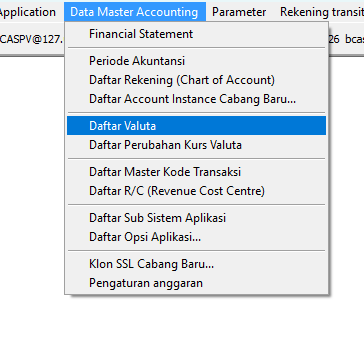
A.2. Halaman Daftar Valuta
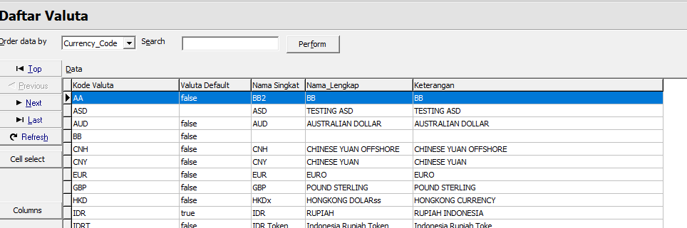
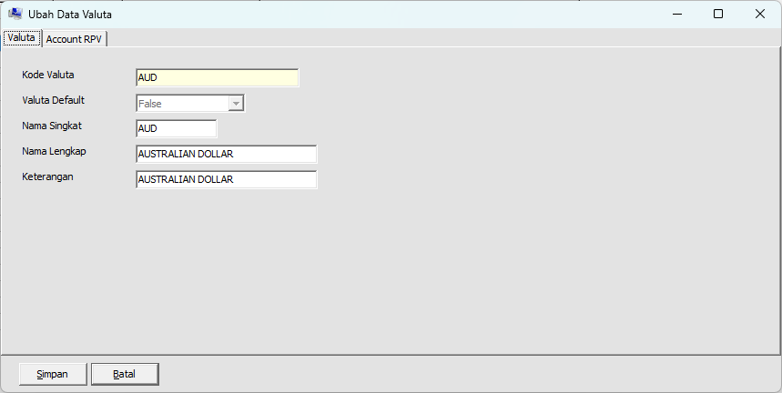
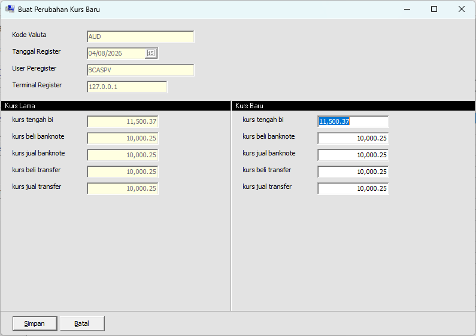
Lampiran B. Screenshot Laporan Valas
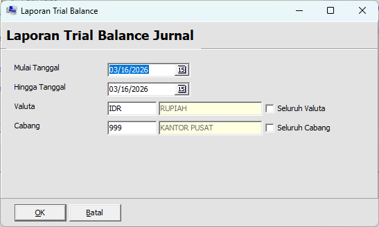
B.2. Output Laporan Trial Balance
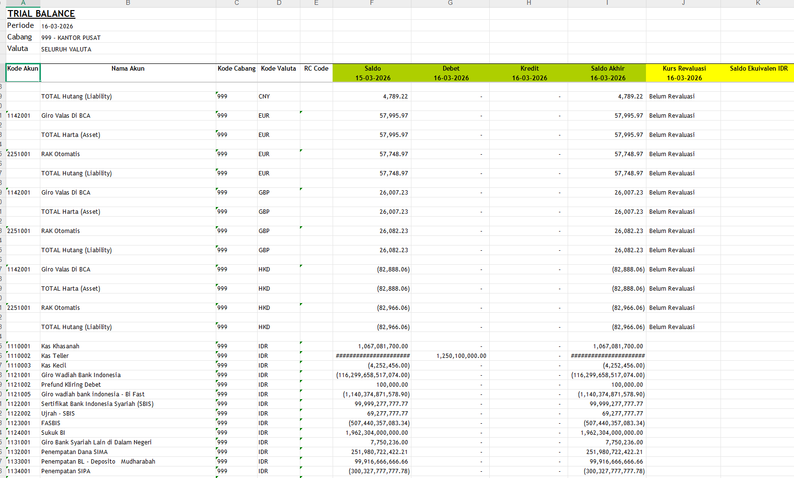
B.3. Halaman Buku Besar Valas
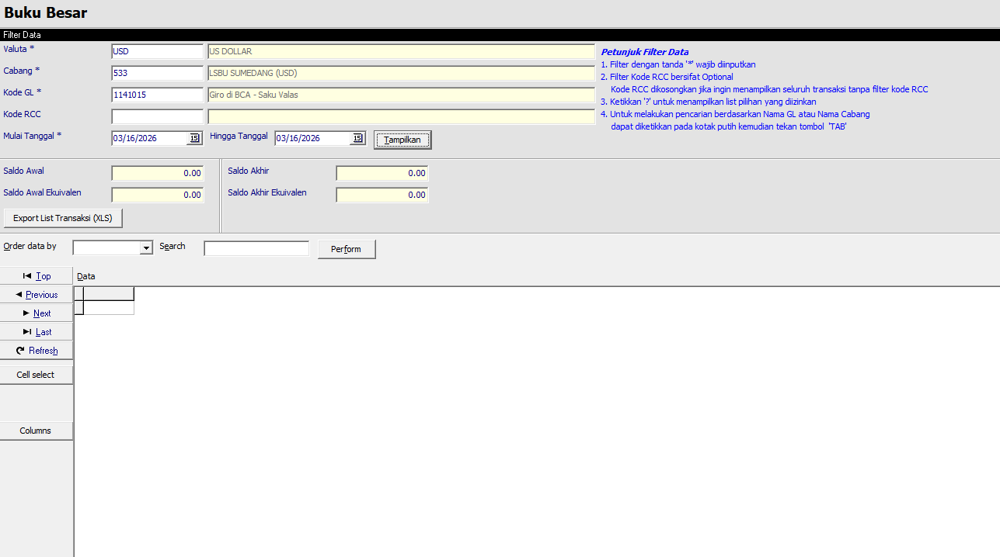
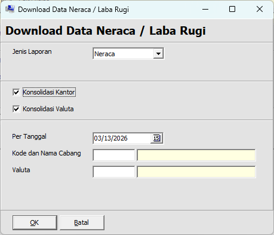
Lampiran C. Screenshot Ledger Balance Verification (LBV)
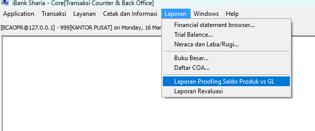
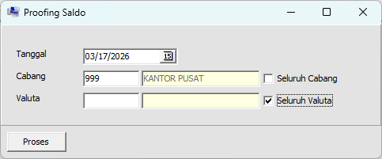
C.3. Output Hasil Ledger Balance Verification
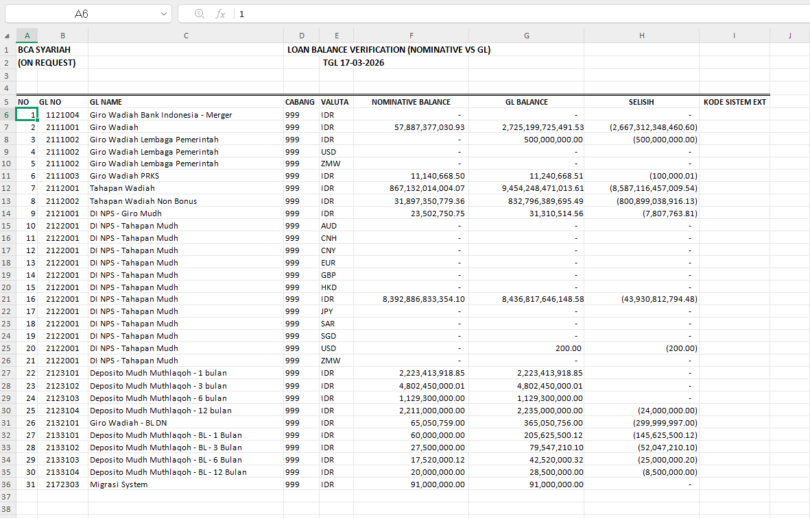
Lampiran D. Screenshot Simulasi GDR & Eksekusi EOM
D.1. Halaman Simulasi GDR dan Daftar Bagi Hasil
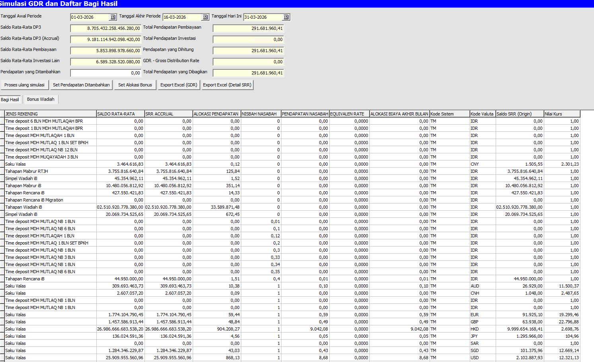